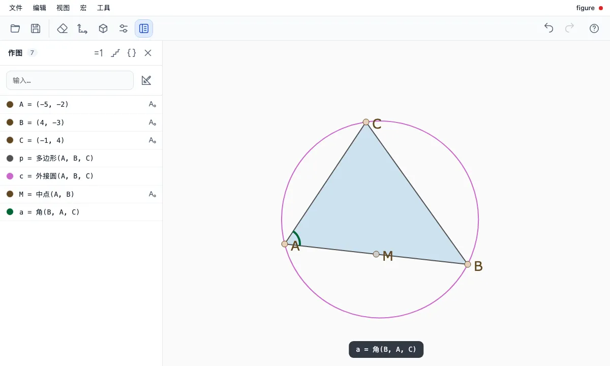
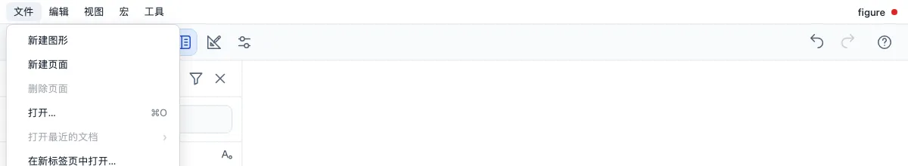

界面

菜单栏

| 菜单 | 命令 |
|---|---|
| 文件 | 新建图形、新建标签页（工作簿）、新建电子表格标签页（电子表格）；打开…（Ctrl O）、打开最近的文档、在新标签页中打开…；视图 › 新建视图、删除视图、新建电子表格视图、删除电子表格视图、视图左移、视图右移（视图）；保存（Ctrl S）、另存为…（Ctrl Shift S）、标签页另存为…；打印…（Ctrl P）；嵌入网页… |
| 编辑 | 撤销, 重做, 删除, 橡皮擦 |
| 视图 | 坐标系, 3D 视图, 作图历史, 工具面板, 属性, 全屏（按 Esc 退出）：勾号表示当前显示的内容 |
| 工具 | 使用手册, DocTools, 许可证与 GitHub, 关于… |
| DocGeo | 当电子表格处于活动状态时，取代其他菜单：作图历史、工具面板、属性、使用手册 |
右侧是图形的文件名，仅限 Chrome 和 Edge（保存）。DocGeo 嵌入其他页面（如 DocTools）时不显示菜单栏。
操作栏
| 按钮 | 作用 | |
|---|---|---|
| 打开 |
.dgo、.dgp、.ggb
|
|
| 保存 | 保存为 .dgo |
|
| 橡皮擦 | 隐藏或显示对象（橡皮擦） | |
| 坐标系 | 坐标轴和网格；3D 中为三面角和地面 | |
| 3D 视图 | 进入空间或返回平面（3D） | |
| 工具面板 | 右侧面板，列出全部工具（工具面板） | |
| 属性 | 右侧面板（属性） | |
| 作图 | 左侧面板 | |
| 撤销、重做 | Ctrl Z，Ctrl Shift Z 或 Ctrl Y | |
| 使用手册 | 在新标签页中以 DocGeo 的语言打开手册 |
中间的上下文区显示所选对象的名称和操作。
“作图”面板
-
每个对象一行，按作图顺序排列：
M = 中点(A, B)。每一行都可以修改（重新定义）。 - 行首的圆点用于隐藏或显示对象；行尾的显示其名称。点对象的圆点采用该点的形状和颜色。
- 在属性中打开它的定义。
- 将指针悬停在任意一行上，可删除该对象及依赖它的对象。此操作可以撤销。
- 标题栏：对象数量、 数值、 逐步构造、 筛选。
- 输入行“输入…”；宽度小于 500 px 时，工具面板的按钮会移到其右侧。
- 鼠标悬停在某一行上时对应对象会高亮，反之亦然。
提示
图形底部的气泡显示当前需要什么（“选择一个点”）、工具将要写出的行，以及红色的错误信息。其上的✕ 用于退出当前工具。
浏览
| 操作 | 手势 |
|---|---|
| 平移视图 | 拖动空白处；在任意处按住右键 |
| 缩放 |
滚轮或触控板，以指针为中心 双指捏合：以两指中点为中心缩放 |
| 旋转 3D 图形 | 右键，或单指在空白处拖动 |
| 透视、地面（3D） | P、S |
当图形含有动画时，左下角会出现一个圆形按钮，用于暂停或继续动画。
多个视图
与 GeoGebra 的绘图区一样，一个图形可以显示在多个并排成列的视图中。作图仍只有一个：每个对象画在一个视图中，一切实时更新。
| 操作 | 方法 |
|---|---|
| 添加视图 | 文件 › 视图 › 新建视图：在右侧多出一列，沿用当前视图的设置；各列宽度相同 |
| 激活视图 | 点按它：一条细蓝线标出它的上边缘。这次点击不会创建点。 |
| 调整大小 | 拖动两列之间的分隔线 |
| 改变顺序 | 文件 › 视图 › 视图左移, 文件 › 视图 › 视图右移 |
| 删除 | 文件 › 视图 › 删除视图：相邻视图接收它的位置和对象 |
- 对象创建在当前视图中，用工具或输入行都是如此。基于另一视图中的对象作出的对象，使用它们在自己视图中的坐标。
- 每个视图有自己的设置：视图 › 坐标系和视图 › 3D 视图，与“图形”选项卡一样，作用于当前视图。3D 视图旁的平面视图从上方显示图形；与 GeoGebra 的绘图区一样，其中的点、直线、线段和多边形只有位于平面 z = 0 内时才显示。
- 滑动条、复选框、菜单、输入框或按钮若因视图变窄而超出其右边缘，就会靠着该边缘放置，但不会丢失原来的位置。
- 一列也可以显示一张工作表：文件 › 视图 › 新建电子表格视图（电子表格）。
这些操作都可以撤销。有两个绘图区，或绘图区位于 3D 视图旁的 GeoGebra 图形，会以两个视图打开。GeoGebra 在两处都显示的对象，在两个视图中都会画出。
撤销
每一次修改都是同一个栈中的一步：作图、删除、移动、样式、坐标系设置、进入 3D。视图的缩放、平移和旋转不算在内。
面板
- 拖动面板的内侧边缘可调整宽度；双击恢复默认宽度。
- 宽度小于 900 px 时，一次只打开一个面板；宽度为 600 px 或更小时，“作图”面板启动时关闭，属性面板覆盖在图形上，选择工具会关闭面板。